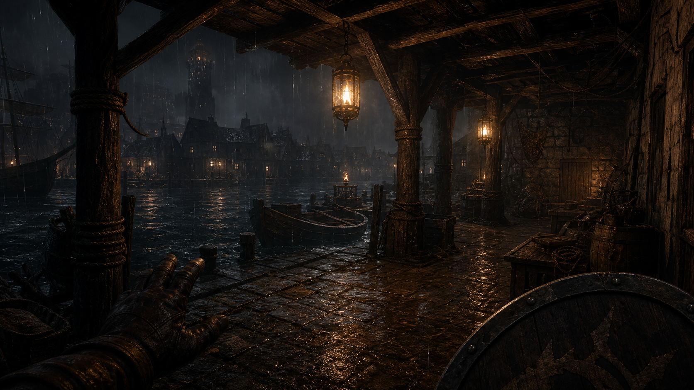

Session 1 · Scene 1 · opening visual
The lanterns answer from below.
Rain needles the harbor stones. Three amber lanterns burn under the pier where the tide should have drowned them.
What Happened
Dice And State
#1 · scene · Rowan reaches Blackwater Pier
Static generated images appear in the Codex conversation for mobile play and are also saved into the campaign gallery for desktop review.
Generated scene prompt: old blackwater harbor pier, amber lanterns under the tide, rain, grounded medieval fantasy.Play The Full Version In Codex
This page is a replay slice. The full game runs as a Codex plugin with persistent local files, SRD indexes, character state, campaign memory, visuals, and rollback checkpoints.
Use Codex Questforge. I want to play in English. Create a quick character and start.Campaign Log
- Setup language: English.
- Rules cache: SRD 5.2.1 indexed locally.
- Preflight: 0 errors, 0 warnings.
What Codex Tracks
- HP, AC, XP, conditions, equipment.
- Inventory, money, shops, rests, spell slots.
- NPC attitudes, clues, clocks, factions.
- Scene prompts, image assets, 360 viewers.
- Checkpoints for rollback.
Challenge Notes
- Game runs in Codex, not only this page.
- Natural language is the controller.
- Images here are new public demo assets.
- Alpha systems are intentionally transparent.